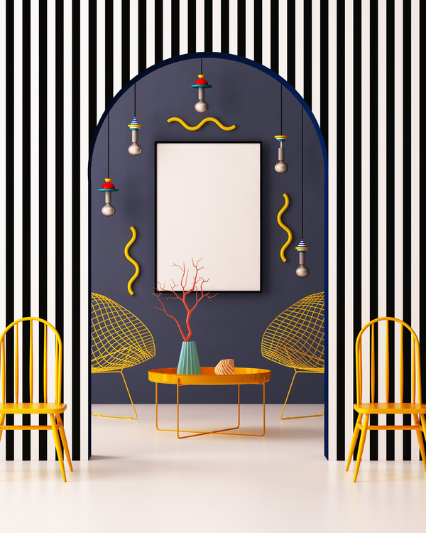

Interior design is the art and science of understanding people's behavior to create functional spaces within a building.
Decoration is the furnishing or adorning of a space with decorative elements, sometimes complemented by advice and practical assistance. In short, interior designers may decorate, but decorators do not design
